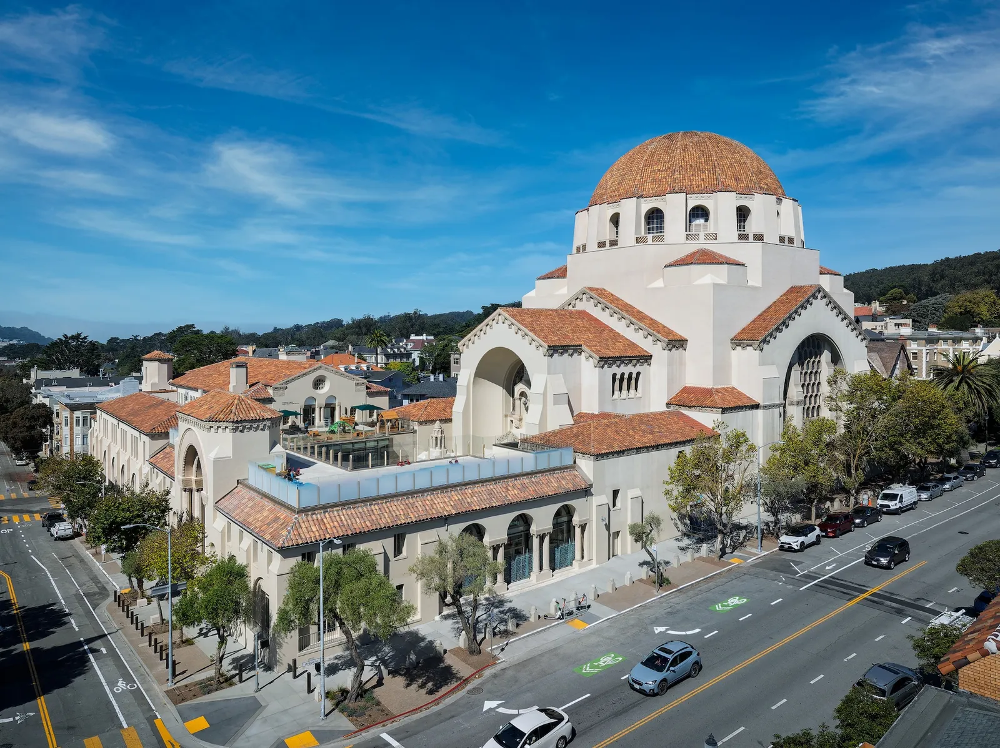
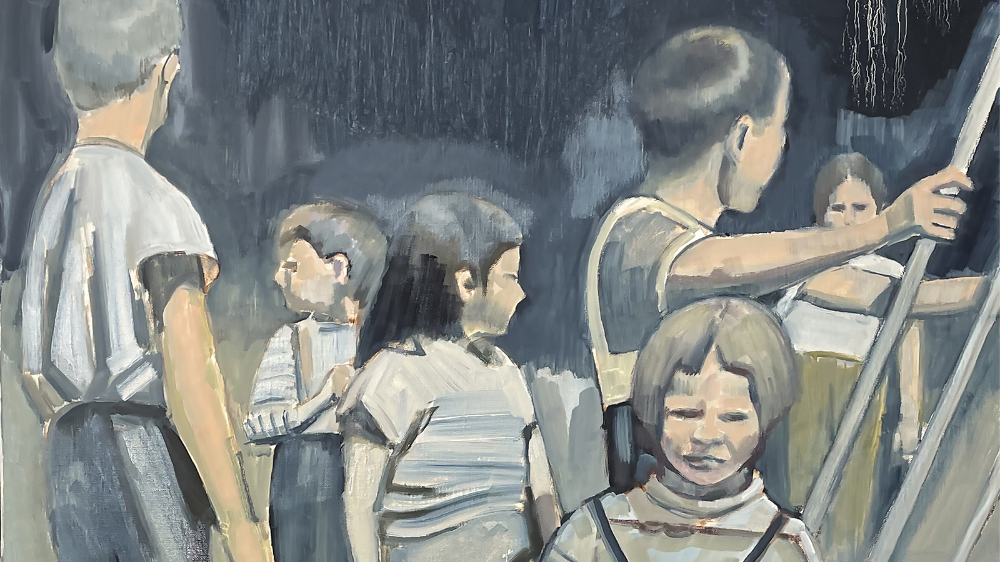
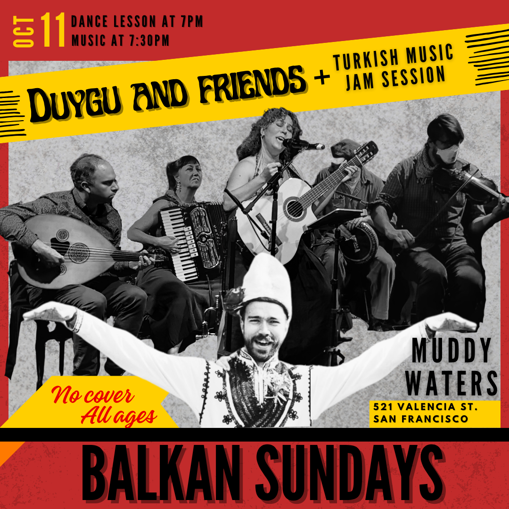
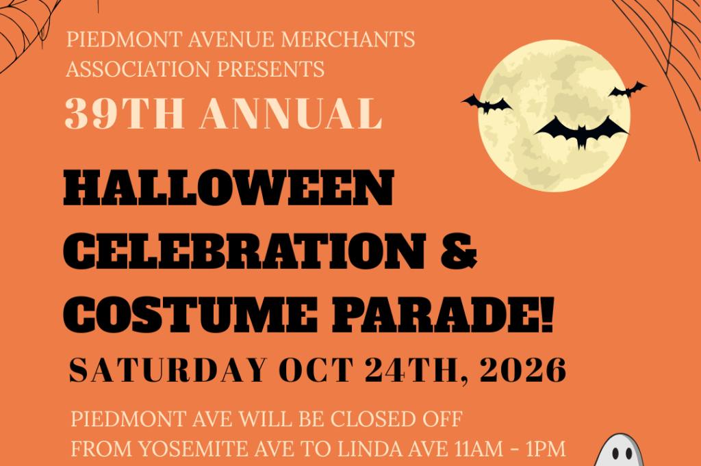

Music
Orchestra Euphonos, Duygu & Friends, Fanfare Zambaleta and related collaborations.
Music →


Peter Bonos is a Bay Area musician and bandleader, concert and festival producer, audio engineer, educator and community arts organizer. He leads Orchestra Euphonos, co-founded Duygu & Friends, performs with Fanfare Zambaleta, and produces community music events including the Berkeley Balkan Bacchanal.
The site is now organized into clear sections so you can move quickly between music, professional work, résumé, photographs, instruments and booking.
Upcoming performances, concerts and community music events. Check back for newly announced dates.

5 PM — Guests are welcome to arrive for a gathering and food in the courtyard.
6–7:15 PM — Erev Simchat Torah Shabbat service with Peter Bonos performing during the service.
Celebrate the joy of Simchat Torah with community at a special Shabbat service filled with music, dancing, and tradition. As we mark the completion and beginning of the annual Torah reading cycle, the building comes alive with spirited hakafot and joyful singing!
Read further ↗October 3, 2026
Holy Trinity Serbian Orthodox Church
1700 School St., Moraga, CA
Peter Bonos performs with Trinity Balkan Brass.
Entertainment / Live Music
12–4 PM — Balkanera Band: Balkan, international & Gypsy jazz. Traditional and modern sounds from around the world.
5–7 PM — NG BEND (Nena Lovre II): Mix of live Serbian music.
7–9 PM — Trinity Balkan Brass (members of Inspector Gadje and Fanfare Zambaleta).

Join us for the opening reception of My American Dream, a new exhibition of oil paintings by local artist Stela Mandel. Meet the artist and experience her poignant visual exploration of refugee and immigrant identities, survival, and ancestral gratitude. Light food and beverages will be served. This event is free and open to the community.
Music by Duo Euphonos — Peter Bonos and Evin Sellin.
Read further ↗
Saturday, October 10, 2026
Doors: 8:30 PM · Show: 9:00 PM
Rickshaw Stop · 155 Fell Street, San Francisco
Peter Bonos performs with Inspector Gadje Balkan Brass Band.
Kafana Balkan returns with the powerhouse Inspector Gadje Balkan Brass Band, special guest Kata Miletich, belly dance by Jill Parker and Mind’s Eye, and DJ Željko. Expect a packed dance floor and a big, high-energy Balkan brass sound from Inspector Gadje’s 14-piece acoustic dance machine.

Sunday, October 11, 2026 · 7–10 PM
Muddy Waters Coffee House · 521 Valencia Street, San Francisco
Balkan Sundays returns to Muddy Waters with Duygu and Friends, followed by a Turkish music jam led by the band. The first half features Turkish, Anatolian and broader Mediterranean folk repertoire; the second half opens up as a jam session, and musicians are welcome to join.
Duygu Gün — guitar & vocals
Peter Bonos — oud & trumpet
Evin Sellin — violin
Zina Pozen — accordion
Aaron Goldstein — percussion
Free admission; supporting the venue by purchasing food and beverages is encouraged.
Read further ↗Doors: 8 PM · Show: 9 PM
Mila Sestra — 9 PM
Hot Blood Orkestar — 10 PM
Ryan Feldthouse and friends reintroduce Hot Blood Orkestar to the Bay Area in the debut of the band’s new incarnation, bringing a high-energy Balkan dance party.
Peter Bonos is producing the event and will also appear as a guest performer with Hot Blood Orkestar at the end of their performance.
Opening the show, Mila Sestra (Dear Sister) — Michele Simon and Hilary Musaji — perform traditional folk music from the Vardar and Pirin Macedonia regions. With two traditional two-course tamburas and two voices, they bring diaphonic songs, drones, ornamentation and insistent odd-metered rhythms to life.
Tickets: $20 general / $15 students. All ages before 10 PM; 21+ after 10 PM. Food, beer and wine available from the bar until 10 PM.

Saturday, October 24 · 11–11:30 AM
Join Peter, Orchestra Euphonos, and a ragtag costumed marching band and hype crew for Piedmont Avenue’s Halloween Parade! Musicians, dancers, clowns, and anyone who loves Halloween are invited to join the parade — play with the band or come as a “ringer” to help create a ruckus.
Friends with youngsters are especially welcome; this is a neighborhood celebration geared especially toward young families. DM Peter for more info.
Interested in booking Peter for a performance or event?
Booking & inquiries →